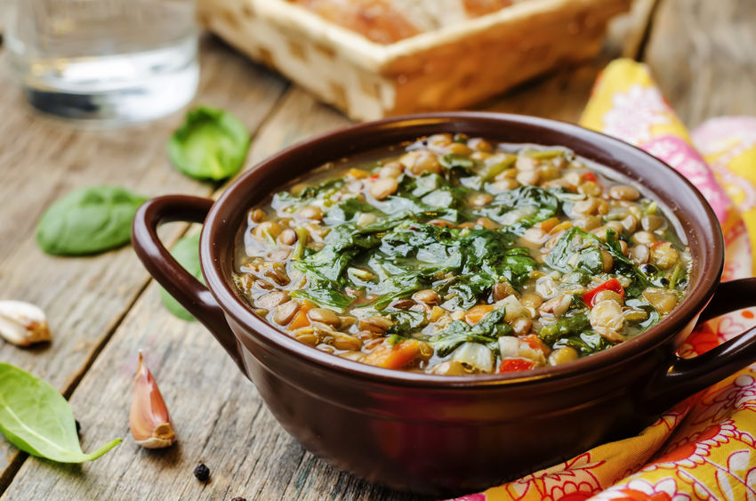

Sopa de lentejas
Ingredientes:
Para 4 personas:
- 250 g de lentejas (remojadas 2 horas si son crudas)
- 1 zanahoria grande picada en cubos
- 1 papa mediana picada en cubos
- 1/2 cebolla picada
- 1 diente de ajo picado
- 1 tomate picado o 2 cucharadas de puré de tomate
- 1 hoja de laurel
- 1 cucharadita de pimentón dulce
- 1 litro de caldo de verduras o agua
- 2 cucharadas de aceite de oliva
- Sal y pimienta al gusto
- Opcional: perejil fresco picado



Instrucciones:
- calienta el aceite en una olla. Sofríe la cebolla y el ajo hasta que estén dorados. Añade el tomate y cocina 2 minutos más.
- añade las lentejas, la zanahoria, la papa, la hoja de laurel, pimentón, sal y pimienta. Cubre con el caldo o agua.
- lleva a ebullición, luego reduce el fuego y cocina a fuego lento durante 25-30 minutos, hasta que las lentejas estén tiernas.
- prueba y ajusta la sal y pimienta
- sirve caliente y decora con perejil fresco si deseas.
consejos
- Si quieres una textura más cremosa, puedes triturar un poco de la sopa con una batidora antes de servir.
- Puedes añadir un poco de chorizo o jamón para darle más sabor, aunque seguirá siendo saludable sin ellos.
- Para un toque extra de sabor, añade comino o una pizca de cayena.